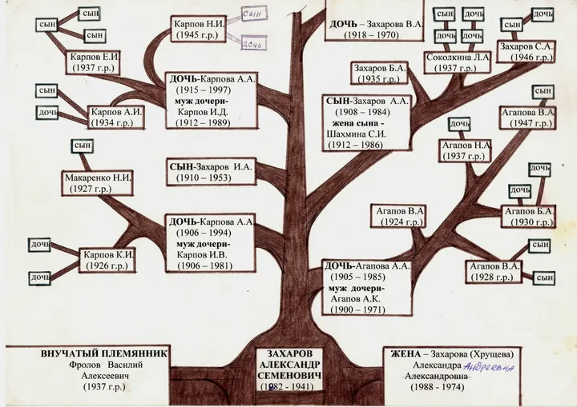
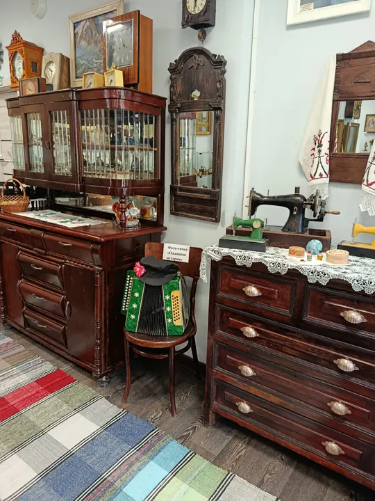

Что хранит собрание
Закладная плита престола
Подлинная чугунная плита, заложенная при освящении первого храма 7 (20) июля 1835 года — в эпоху императора Николая I при архиепископе Пермском Аркадии.
Белокаменное надгробие
Найдено при раскопках фундамента собора. Надпись: «На сем месте погребено тело усопшей рабы Евдокии, жены Михайловского завода крестьянина Бориса Мазаева, преставившейся в 1846 году в 14 лет от роду…» — свидетельство трагических судеб заводских семей XIX века.
Кладка колокольни 1835 года
Подлинная каменная кладка основания колокольни первого храма, сохранённая в экспозиции.
Собрание икон
Иконы рубежа XVIII–XIX веков, подписные образы XIX века, раритеты Невьянской школы с тончайшим сусальным золотом и завитками, Первоуральская школа. Складни, меднолитая пластика, житийные клейма. Отдельный ряд — «раненые» иконы, чудом спасённые прихожанами при разгроме 1935 года.
«Как рождается икона»
Полный визуальный ряд работы древнерусских изографов: древодел, левкасчик, знаменщик, позолотчик, платьечник, личник. Яичная темпера, натуральные земляные пигменты, вареная янтарная олифа.
Старопечатные и рукописные
«Толкование на Псалтырь» 1798 года, церковный «Октоих» московской печати 1889 года, дореволюционные богослужебные Требники, Минеи и толкования литургии. Жемчужина собрания — богослужебная Псалтирь 1646 года, эпохи царя Алексея Михайловича.
Метрические и клировые книги
Бесценный генеалогический архив: любой коренной михайловец может восстановить свою родословную до седьмого колена — узнать имена предков, венчавшихся или крестившихся в Вознесенском соборе.

«Семейные ценности, Семейные реликвии»
Воссоздан подлинный интерьер жилища михайловского мастера: красный угол с божницей и лампадой, прялки и ручные ткацкие станки, самовары тульских фабрик, глиняные корчаги и кринки, кованые ухваты, углевые утюги, берестяные туеса. Кованые сундуки мастера Ивана Карпова 1886 года; традиционные костюмы и праздничная одежда гамаюнок.
Облачения и литургические предметы
Старинная плащаница Спасителя XIX века, полный иерейский чин — фелонь с золотным шитьём, епитрахиль, поручи, — напрестольные кресты с горячими эмалями, семисвечники, кадила и подлинное подвесное паникадило начала XX века.


